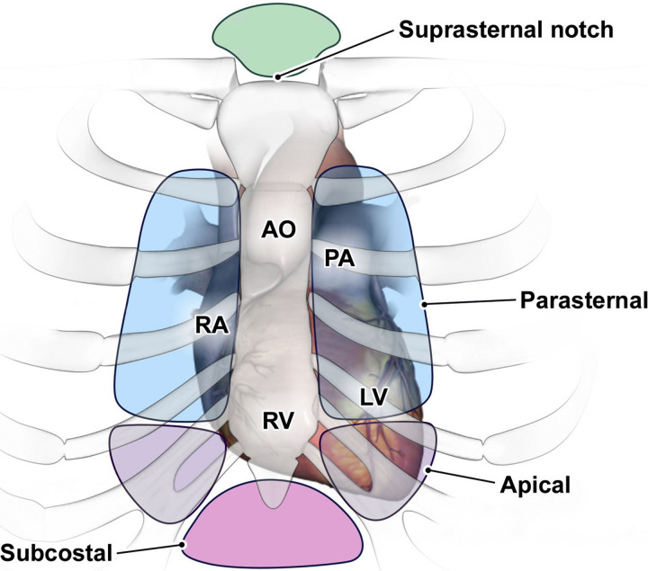
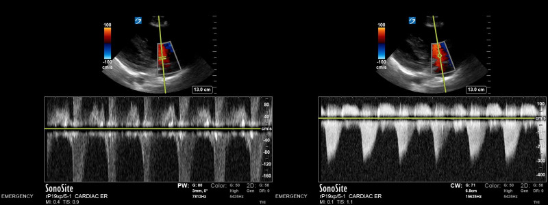
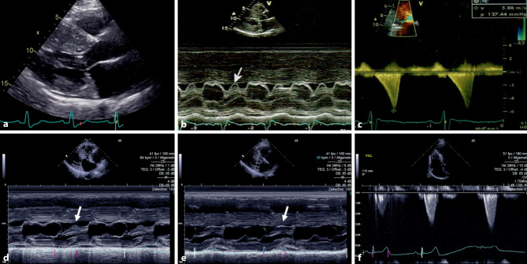
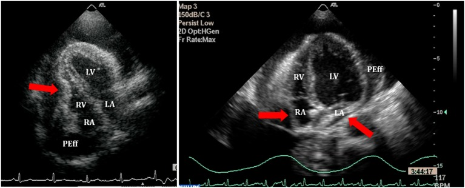
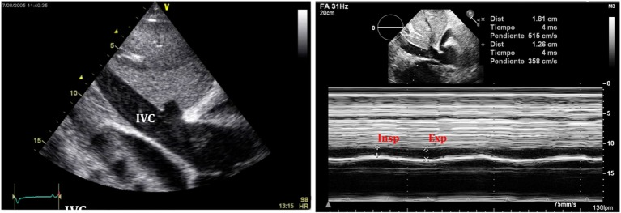
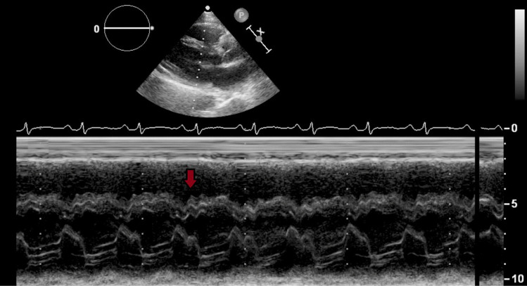
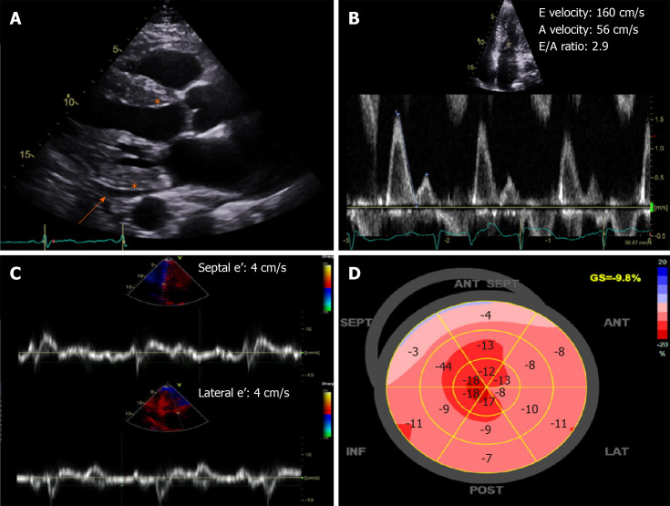

原理 Principle
探頭發出超音波脈衝，遇到聲阻抗不同的界面就反射回來：回波返回的時間 → 深度、回波的強度 → 亮度。這解釋了它的兩個宿命——骨頭與空氣幾乎全反射（肋骨與肺會擋住視線），而頻率愈高解析度愈好、穿透愈淺（貼著左心房後方的 transesophageal echocardiography (TEE) 用 4–7 MHz，隔著胸壁的 transthoracic echocardiography (TTE) 只能用 2–5 MHz）。
都卜勒測的是回波的頻率偏移，偏移量正比於速度乘上 cos（音束與運動方向的夾角）；所有壓差、逆流與填充壓的數字都由此而來，最大的陷阱也在這裡——角度沒對齊只會低估，不會高估。組織都卜勒（tissue Doppler imaging, TDI） 則把濾波器反過來用：血流是高速低振幅、心肌是低速高振幅，濾掉血流就能測二尖瓣環的 e′、a′、s′。

TTE 的四個基本 acoustic windows：parasternal 位於左胸骨緣、apical 位於心尖搏動處、subcostal 從劍突下以肝臟作聲窗、suprasternal notch 從胸骨上窩看主動脈弓。胸骨旁旋轉探頭得到長軸／短軸；心尖窗再旋轉得到四腔／二腔／三腔。Source: Willis et al., Radiographics 2021, Figure 1（經原文授權重印）。什麼時候做
- 這顆心臟的幫浦剩多少 → 量 left ventricular ejection fraction (LVEF)，決定 Heart failure 走 HFrEF 還是 HFpEF
- 這個雜音是哪一個瓣膜、有多嚴重、要不要開刀 → 把 Cardiac auscultation 聽到的東西量化
- 這個休克是哪一型 → Shock 的床邊分流：心包填塞？右心衰竭？低容積？幫浦壞掉？
- 心肌哪一塊不動、有沒有機械性併發症 → ACS 後的節段運動異常、乳頭肌斷裂、中膈破裂、游離壁破裂
- 心包腔裡的液體有沒有在壓迫心臟 → Cardiac tamponade 的首選檢查（不是胸部 X 光）；這個舒張困難是心包還是心肌 → Constrictive pericarditis vs Restrictive cardiomyopathy
- 有沒有東西黏在瓣膜上、有沒有血栓 → Infective endocarditis、Atrial fibrillation 轉復前的左心耳
- 症狀是不是只在需氧上升時才出現、那塊不動的心肌還救不救得回來 → 壓力超音波、低劑量 dobutamine 存活性評估
- 縱向追蹤（已知瓣膜病、心肌症、化療心毒性）：重點是同一個參數、同一種量法、最好同一台機器的變化量
怎麼做 / 病人準備
① 三種做法的取捨
| 項目 | TTE 經胸 | TEE 經食道 | 壓力超音波 |
|---|---|---|---|
| 病人準備 | 幾乎不用；左側臥、露出胸壁 | 禁食 ≥4–6 小時、取下活動假牙、咽喉局部麻醉＋鎮靜、監測與靜脈通路 | 依目的停用會壓抑心率的藥、簽同意書、備妥急救設備 |
| 主要風險 | 幾乎沒有 | 食道穿孔：罕見但可致命（記量級即可，不必記百分比）、出血、鎮靜相關呼吸抑制、吸入 | 誘發心律不整或缺血事件（所以要有人在場） |
| 它看得最好 | LV 功能、心包腔、心尖、右心壓力、整體血行動力學 | 左心房與左心耳、瓣膜與人工瓣膜細節、瓣周膿瘍、心房中膈與 patent foramen ovale (PFO)、主動脈 | 誘發後才出現的節段運動異常、動態 LVOT 壓差、運動時的 E/e′ 與肺動脈壓 |
| 它看不到 | 左心耳、人工瓣膜正後方（音影）、降主動脈、太小的贅生物 | 心尖（離探頭最遠，反而是 TEE 的盲點） | 音窗差就整個做不了 |
② 壓力超音波怎麼加負荷
| 負荷方式 | 怎麼做 | 什麼時候選它 |
|---|---|---|
| 運動（跑步機／腳踏車） | 運動至目標心率，運動後 60–90 秒內必須完成取像（否則室壁運動已恢復） | 能運動的人首選——同時拿到運動耐受度、症狀、血壓與心律反應 |
| Dobutamine | 5 → 10 → 20 → 30 → 40 μg/kg/min，每階約 3 分鐘；未達 85% 預測最大心率時加 atropine | 不能運動者；心肌存活性評估（看低劑量的 biphasic response） |
| Valsalva／站立誘發 | 不需藥物，讓心室變小 | 動態 LVOT 阻塞（HCM）——休息時沒壓差不代表沒有阻塞 |
| 運動舒張壓力測試 | 運動前後比較 E/e′ 與 TR 速度 | 喘但休息時舒張參數正常、懷疑 HFpEF 時 |
判讀 Interpretation
① 收縮功能：LVEF 與節段運動
| 項目 | 數值／原則 |
|---|---|
| LVEF 正常值與分類 | 男 52–72%、女 54–74%（ASE）；≤40% HFrEF、41–49% HFmrEF、≥50% HFpEF（見 Heart failure） |
| 標準量法 | biplane method of discs（改良 Simpson 法）：心尖四腔＋二腔，舒張末與收縮末各描心內膜一次；乳頭肌算進腔室之外、避免心尖縮短。M-mode 的 Teichholz 公式不建議——用一條線推算整顆心室，有節段運動異常就完全失真 |
| 影像不清時 | 用超音波顯影劑做左心室顯影（LV opacification），不要硬猜 |
| 更早期的指標 | GLS 一般以絕對值 ≥18% 為正常（報告寫成 −18% 或更負）；EF 還正常時就可能已經下降 |
| 其他常用正常值 | 左心室舒張末徑 男 42–58 mm、女 38–52 mm；left atrial volume index (LAVI) >34 mL/m² ＝左心房擴大；tricuspid annular plane systolic excursion (TAPSE) <17 mm ＝右心室功能不良 |
節段運動異常（regional wall motion abnormality, RWMA） 用 17 節段模型描述，每一節都能對應到冠狀動脈供血區。分級：hypokinesis ＝增厚與內移變少但還在動、akinesis ＝完全不動不增厚、dyskinesis ＝收縮期反而向外凸（aneurysm 是舒張期就已變形外凸的薄壁區）。
② 舒張功能
四個核心變數（ASE／EACVI 2016）：平均 E/e′（填充壓）、瓣環 e′（鬆弛）、tricuspid regurgitation (TR) 尖峰速度（下游肺動脈壓的間接證據）、LAVI（左心房長期承受高壓的「壓力日記」）——切點見頂部速查。EF 正常者先判斷有沒有舒張功能異常：四項中 ≥3 項符合 → 異常、≤1 項 → 正常、剛好 2 項 → 無法判定（就寫無法判定，不要硬分級）。
分級（EF 下降，或 EF 正常但已知心肌病變）：從 E/A 起手——
| E/A 與 E 波 | 判定 | 左心房壓 |
|---|---|---|
| E/A ≤0.8 且 E ≤50 cm/s | Grade I（鬆弛障礙） | 正常 |
| E/A ≥2 | Grade III（限制型填充） | 高 |
| 介於中間（E/A ≤0.8 但 E >50，或 E/A 0.8–2） | 看 E/e′ >14、TR >2.8、LAVI >34 三項符合幾項：≥2 項 → Grade II（偽正常）；≤1 項 → Grade I | 依上一格 |
③ 都卜勒能換算出哪些壓力
- 簡化 Bernoulli：ΔP ＝ 4v²（v 用 m/s，ΔP 得 mmHg）是一切壓差的來源；pulmonary artery systolic pressure (PASP) ＝ 4×(TR Vmax)² ＋ 右心房壓。
- 右心房壓由下腔靜脈 (IVC) 估：≤2.1 cm 且吸氣塌陷 >50% → 3 mmHg；>2.1 cm 且塌陷 <50% → 15 mmHg；兩者之間 → 8 mmHg。
- 重度主動脈瓣狹窄：Vmax ≥4.0 m/s、平均壓差 ≥40 mmHg、瓣口面積 ≤1.0 cm²（見 Aortic stenosis↗）。
- 阻塞型 HCM：LVOT 壓差 ≥30 mmHg 為阻塞；≥50 mmHg 才進入中膈減積的門檻。

同一高速血流的 PW（左）與 CW（右）：PW 有 range specificity，但超過 Nyquist limit 會 alias、無法量到真峰值；CW 沒有特定深度資訊，卻能完整描出高速噴流包絡線。因此量瓣膜狹窄或 LVOT peak velocity 用 CW。Source: StatPearls — Doppler Echocardiography, Figure 5（CC BY-NC-ND 4.0）。④ 招牌所見：看到這個就想到那個
| 所見 | 怎麼看到它 | 它代表什麼 |
|---|---|---|
| SAM（收縮期二尖瓣前葉前向運動） | M-mode 掃過二尖瓣可見收縮期前葉被吸向中膈；CW 測 LVOT 呈匕首狀（dagger-shaped）晚期峰值波型 | 動態左心室出口阻塞 → HCM；也可見於嚴重容積不足或瓣膜手術後 |
| 心包積液 ＋ 右心塌陷 | 右心房舒張期內凹（持續 >1/3 心動週期時特異性最高）、右心室舒張早期塌陷（較晚出現但很特異）、IVC 擴張且吸氣不塌（plethora） | Cardiac tamponade。這是血行動力學診斷，不是積液量的診斷 |
| Septal bounce（中膈彈跳） | 舒張早期中膈朝左心室急促跳動一下，隨呼吸擺動 | 心室交互依賴 → Constrictive pericarditis |
| 呼吸相跨瓣流速變異 | PW 測二尖瓣／三尖瓣流速並同步記錄呼吸 | 二尖瓣 E ≥25%、三尖瓣 ≥40% → 束縮或填塞的交互依賴生理；Restrictive cardiomyopathy <10% |
| 肝靜脈血流逆流的時相 | PW 測肝靜脈 | 吐氣時逆流 → 束縮；吸氣時逆流 → 限制型心肌症 |
| Granular sparkling ＋ 厚牆低電壓 | 2D 上心肌呈顆粒閃爍狀、心室壁明顯增厚，但心電圖電壓反而低；strain 呈 apical sparing 牛眼圖 | 心臟類澱粉沉積症。「壁厚配低電壓」這個矛盾是它與 HCM（壁厚配高電壓）最快的分界 |
| Vegetation 贅生物 | 附著在瓣膜上、與瓣膜獨立擺動的震盪腫塊，好發於血流上游的低壓側 | Infective endocarditis；同時要找瓣周膿瘍、瓣膜穿孔、人工瓣膜鬆脫 |
| 二尖瓣脫垂 | 胸骨旁長軸上瓣葉在收縮期越過瓣環平面 >2 mm | 黏液性退化。聽診是收縮中期喀啦聲＋收縮末期雜音，且心室愈空愈吵（見 Cardiac auscultation） |
| D-shaped 左心室 | 短軸上中膈被推平，左心室變成 D 字 | 右心室壓力／容積過載——肺高壓、大量肺栓塞 |
| McConnell sign | 右心室游離壁中段不動，但心尖照常收縮 | 急性肺栓塞的相對特異徵象 |

HCM／SAM：上排中與下排箭頭標出收縮期二尖瓣前葉向中膈移動；右側 CW Doppler 是晚峰、dagger-shaped LVOT jet。Source: Frederich et al., Internist 2024, Figure 2（CC BY 4.0）。

Tamponade：early-diastolic RV collapse（上）加上擴張、吸氣不塌的 IVC plethora（下）。Source: Pérez-Casares et al., Front Pediatr 2017, Figures 8 and 11（CC BY 4.0）。
Constrictive pericarditis 的 septal bounce：M-mode 紅箭頭處可見中膈早舒張期異常擺動；要再用呼吸相依的 ventricular interdependence 與 annulus reversus／paradoxus 確認。Source: Welch et al., J Cardiovasc Dev Dis 2022, Figure 7。
Cardiac amyloidosis：A 顯示壁厚與少量心包積液，B／C 顯示 restrictive filling 與 e′ 降低，D 的 strain bull’s-eye 保留心尖、基底與中段較差，形成 relative apical sparing。Source: González-López et al., World J Radiol 2020, Figure 2（CC BY-NC 4.0）。干擾與偽陽性
① 音窗差：最大的敵人
| 因素 | 為什麼會擋住 | 怎麼辦 |
|---|---|---|
| 肥胖 | 脂肪衰減超音波，且探頭離心臟更遠 | 降低頻率、換劍突下切面、超音波顯影劑，必要時改 TEE |
| COPD／肺過度充氣 | 空氣幾乎全反射超音波，肺把心臟蓋住 | 劍突下切面（從橫膈下方繞過肺）、呼氣末屏氣、坐姿 |
| 機械通氣與高 PEEP、皮下氣腫、胸管、胸壁畸形、術後敷料、乳房植入物 | 同上，或探頭根本放不上去 | TEE |
② 什麼會讓數字往哪個方向偏
| 干擾因素 | 影響哪個數字 | 偏向 |
|---|---|---|
| 都卜勒音束與血流夾角過大，或用 PW 去測高速噴流 | 所有速度與壓差 | 低估（cos 誤差只會扣分不會加分；PW aliasing 折返會嚴重低估） |
| 心搏過速（E、A 融合）、心房顫動（每一拍填充不同） | 舒張參數 | 過速 → 無法判讀，不要硬套演算法；顫動 → 平均 5 拍以上，且 A 波消失、E/A 不能用 |
| 重度二尖瓣逆流 | E 波、LAVI | E 被高估 → E/e′ 不可靠 |
| 二尖瓣狹窄、重度瓣環鈣化、人工二尖瓣、束支傳導阻滯或起搏心律 | e′ | e′ 被扭曲 → E/e′ 不可用 |
| 低流量低壓差的主動脈瓣狹窄（EF 低或每搏量小） | AS 壓差 | 壓差低估嚴重度 → 要算瓣口面積，必要時做低劑量 dobutamine 挑戰 |
| 容積狀態 | HCM 的 LVOT 壓差 | 脫水／過度利尿讓心室變空 → 壓差被放大；補液後下降 |
| 心尖縮短（foreshortening）、描心內膜的位置 | 心室容積與 EF | 容積被低估、EF 誤差方向不定 → 追蹤時固定同一種量法並註明 |
③ 「超音波正常」不能排除的東西
| 不能排除 | 為什麼 | 該做什麼 |
|---|---|---|
| Aortic dissection | TTE 陰性不能排除——看不到降主動脈與大部分弓部，整體敏感度只有六成上下 | 穩定 → CT 血管攝影；不穩定或不能移動 → TEE（對 Stanford A 型敏感度與特異度都在九成以上） |
| Infective endocarditis | 贅生物敏感度四格要一起記：TTE 自體約 70%／人工約 50%；TEE 自體約 96%／人工約 92% | 臨床懷疑就直接做 TEE，TTE 陰性也要做；仍高度懷疑時 48–72 小時後重做 |
| 肺栓塞 | 多數非大範圍的肺栓塞心臟超音波完全正常 | CT 肺動脈攝影；超音波只用來看右心負荷與危險分層 |
| CAD／穩定型心絞痛 | 休息時不缺血就沒有 RWMA | 壓力測試（壓力超音波、Myocardial perfusion imaging）或冠狀動脈 CT |
| 左心耳血栓 | TTE 幾乎看不到左心耳 | Atrial fibrillation 要轉復而抗凝不足時 → TEE |
| 局限性心包積液造成的填塞 | 心臟手術後、外傷後的血塊可能只壓迫單一腔室 | 高度懷疑就做 TEE 或直接外科探查 |
| 心包厚度正常的 Constrictive pericarditis | 手術證實的束縮約兩成心包厚度是正常的 | 靠血行動力學（都卜勒、Cardiac catheterization↗）判定，不靠厚度 |
與相關檢查的取捨
TTE、TEE 與壓力超音波三者之間的取捨見上面「三種做法」那張表；這裡談的是超音波與其他工具的分工。
| 檢查 | 它最會回答什麼 | 它的死穴 | 什麼時候選它 |
|---|---|---|---|
| 心臟超音波（本篇） | 幫浦功能、瓣膜、心包、右心壓力——即時、床邊、無輻射、可重複 | 音窗差就沒轍；後方結構與遠端主動脈看不到 | 第一線，幾乎所有心臟問題從它開始 |
| 壓力超音波 | 「這個人在需氧上升時會不會缺血」＋ 動態 LVOT 壓差 ＋ 心肌存活性 | 需要好音窗、判讀者依賴度高（敏感度、特異度約 80–85%） | 中度可能性的穩定胸痛、能運動、想同時看到症狀與影像的對應 |
| Myocardial perfusion imaging | 心肌血流灌注的區域差異、缺血面積、存活性 | 有輻射、空間解析度較差、看不到瓣膜與心包 | 音窗太差、或要量化缺血面積時 |
| Cardiac MRI↗ | 組織特性——延遲增強的分布（心內膜下且循血管＝缺血；中層／心外膜下＝非缺血）、T2 水腫＝急性發炎、最準的容積與 EF | 貴、慢、要屏氣配合、金屬與腎功能限制、不能床邊 | 心肌症要定病因、疑似心肌炎或浸潤、要看存活性（延遲增強透壁 <50% 較可能恢復，>75% 幾乎不會） |
| Cardiac catheterization↗ ／ Coronary angiography↗ | 直接量壓力與心輸出量；冠狀動脈解剖上有沒有狹窄 | 侵入性；解剖上的狹窄不等於有缺血 | 非侵入性資料互相矛盾時的仲裁（最典型是束縮 vs 限制）；高風險、壓力測試陽性或 ACS |
| 胸部 X 光 | 肺水腫、心影大小、其他胸腔病灶 | 心包積液要 >200 mL 才看得出心影變大，而且完全看不出血行動力學 | 心包疾病的首選永遠是超音波，不是 X 光 |
| Troponin ／ EKG ischemia | 心肌有沒有壞死；現在有沒有急性完全阻塞（秒級） | 不說壞在哪一塊、也不看結構 | 與超音波互補：決定要不要立刻進導管室的是心電圖，不是超音波 |
禁忌與陷阱
相關連結
- Heart failure（EF 分類與 HFpEF 需要的舒張證據）／Cardiac tamponade（右心塌陷、IVC plethora 與唯一的解法）／Constrictive pericarditis ／ Restrictive cardiomyopathy（e′ 與呼吸相變異度在這裡發揮最大價值）
- HCM（SAM、動態 LVOT 壓差、誘發試驗）／Aortic stenosis↗（嚴重度切點與低流量低壓差陷阱）／Infective endocarditis（TTE 陰性也要做 TEE）／Atrial fibrillation（轉復前的左心耳評估）
- ACS ／ CAD（節段運動異常與機械性併發症）／Shock（床邊用超音波分型）／Troponin ／ EKG ischemia（壞死、時間軸、機制的三方分工）
- Cardiac MRI↗ ／ Myocardial perfusion imaging ／ Cardiac catheterization↗ ／ Coronary angiography↗（互補的四個工具）；Cardiac auscultation（床邊聽到的東西在這裡被量化）；Chest pain↗ ／ Dyspnea ／ Edema（由主訴進入本篇的路徑）